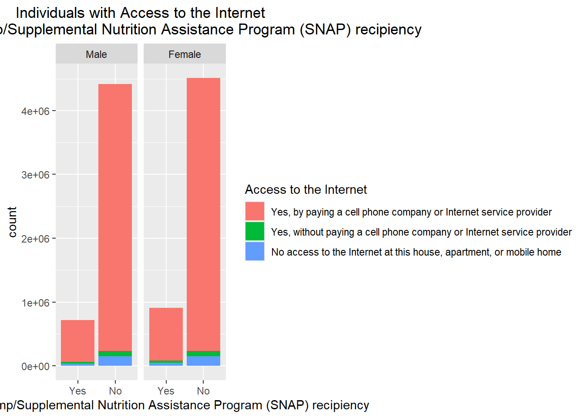
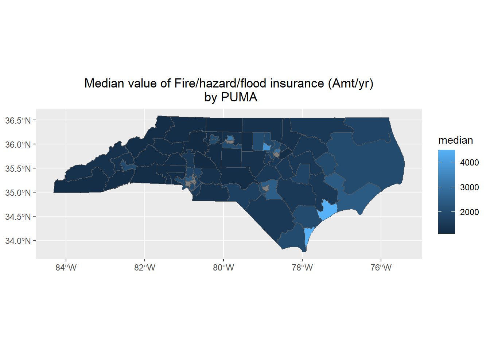

Public Use Microdata Sample (PUMS) data obtained from the American Community Survey (ACS), whose results come from around 1% of the population in the US (User Guide 4)
This app contains data for North Carolina, 2023
Zipped file downloaded from FTP site: https://www2.census.gov/programs-surveys/acs/data/pums/2023/1-Year/
There is a Margin of Error (MOE) associated with PUMS, as PUMS data are produced via sampling from the full ACS, and some values have been anonymized (User Guide 4)
PWGTP is the weighting variable for the person file that allows making estimates for the entire population based on the PUMS sample
PWGTP1-PWGTP80 are for calculating margin of error for the PUMS sample
Variance formula provided by the User Guide: VAR(x) = (4/80)*sum{(x_r - x)^2}, where the sum is from 1 to 80 for each of the 80 replicate weights, and x_r are the estimates using each replicate weight, and x is the estimate using PWGTP
Incomes and earnings need to be adjusted for inflation to make them aligned to 2023 dollars.
ADJINC should be divided by 1,000,000 and multiplied by the PUMS variable
ADJHSG is 1,000,000 for 2023, so technically we don’t have to adjust these
It should be noted that while SERIALNO are unique in Housing data, they are not in the Person file (presumably because many households have more than one person)
As such, all metrics are calculated based on individuals (using PWGTP), even if the characteristic chosen is measured at the housing level
Therefore, certain metrics may be overestimated if the numerical data point is measured at the household level (e.g. property value), and a significant number of SERIALNO have more than one member in the household
Read in csv files from zipped directory - read in as character, use helper function to assign appropriate column types and values
Person files
Note: Dropping “RT” from both data sets because this is “row type”, and will be different in the two files. I don’t want it to interfere with a join. Even though we only have to join on SERIALNO, doing so creates a lot of duplicated fields (DIVISION, ST, etc.). It is less error-prone to just join on all the matching fields than to drop all the duplicated fields from one data set.
person_data <-unzip("data/csv_pnc.zip", files =c("psam_p37.csv")) |>read_csv(col_types =cols(.default ="c"),show_col_types =FALSE) |>select(-RT)# number of households with more than one member reported on surveyperson_data |>group_by(SERIALNO) |>summarize(count =n()) |>filter(count >1) |>summarize(multi_person_households =n(), total_individuals =sum(count))
Rows: 1696 Columns: 6
── Column specification ────────────────────────────────────────────────────────
Delimiter: ","
chr (3): STATE, STATENAME, CHARACTERISTIC
dbl (3): PUMS_EST_23, PUMS_SE_23, PUMS_MOE_23
ℹ Use `spec()` to retrieve the full column specification for this data.
ℹ Specify the column types or set `show_col_types = FALSE` to quiet this message.
Data dictionary
Reference for values for all of the variables in the PUMS data
Blank values in the data dictionary are represented by a series of b’s, with the number of b’s determined by the length of the field. These need to be changed to actual blank values for use with the PUMS data
csv does not have headers
the first column in the csv has two possible values, NAME or VAL
NAME rows have 5 columns, with column 2 being the variable name and column 5 being the descriptive label for that variable
VAL rows have 7 columns, and links a set of min and max values (columns 5 and 6) with a meaningful descriptive value (column 7)
Data dictionary will be read in as one file, and then split into two separate tibbles to have the names and values separate
# read in the entire data dictionary (select distinct due to duplicated rows)data_dictionary <-read.csv("data/PUMS_Data_Dictionary_2023.csv",header =FALSE,col.names =c("row_type", "variable_name", "data_type", "length","value", "value_max", "data_label"),na.strings =c("NA", "")) |>as_tibble() |>distinct()#### Don't need the following couple sets of code if using both person and housing files# create a list of variables that is in the NC census data (there are fewer variables in the actual PUMS data than there is in the data dictionary)# var_list <- tibble(variable_name = names(census))# # # keep all variables in data_dictionary that have a match in the PUMS (var_list)# data_dictionary <- data_dictionary |># semi_join(var_list, by = "variable_name")# data dictionary for namesdata_dictionary_names <- data_dictionary |>filter(row_type =="NAME") |>select(variable_name, value)# data dictionary for valuesdata_dictionary_values <- data_dictionary |>filter(row_type =="VAL") |>select(variable_name, data_type, length, value, value_max, data_label)# filter on the missing values....trying to decide what to do with them...data_dictionary_values |>filter(value ==strrep(rep("b", length(data_dictionary_values$value)), length))
# A tibble: 235 × 6
variable_name data_type length value value_max data_label
<chr> <chr> <int> <chr> <chr> <chr>
1 ACCESSINET C 1 b b N/A (GQ/vacant)
2 ACR C 1 b b N/A (GQ/not a one-family hous…
3 AGS C 1 b b N/A (GQ/vacant/not a one fami…
4 BATH C 1 b b N/A (GQ)
5 BDSP N 2 bb bb N/A (GQ)
6 BLD C 2 bb bb N/A (GQ)
7 BROADBND C 1 b b N/A (GQ/vacant/no paid access…
8 COMPOTHX C 1 b b N/A (GQ/vacant)
9 CONP N 4 bbbb bbbb N/A (GQ/vacant units/not owne…
10 DIALUP C 1 b b N/A (GQ/vacant/no paid access…
# ℹ 225 more rows
data_dictionary_names
# A tibble: 521 × 2
variable_name value
<chr> <chr>
1 RT Record Type
2 SERIALNO Housing unit/GQ person serial number
3 DIVISION Division code based on 2020 Census definitions
4 PUMA Public use microdata area code (PUMA) based on 2020 Census def…
5 REGION Region code based on 2020 Census definitions
6 STATE State Code based on 2020 Census definitions
7 ADJHSG Adjustment factor for housing dollar amounts (6 implied decima…
8 ADJINC Adjustment factor for income and earnings dollar amounts (6 im…
9 WGTP Housing Unit Weight
10 NP Number of persons in this household
# ℹ 511 more rows
data_dictionary_values
# A tibble: 5,385 × 6
variable_name data_type length value value_max data_label
<chr> <chr> <int> <chr> <chr> <chr>
1 RT C 1 H H Housing Record or…
2 RT C 1 P P Person Record
3 SERIALNO C 13 2023GQ0000001 2023GQ9999999 GQ Unique identif…
4 SERIALNO C 13 2023HU0000001 2023HU9999999 HU Unique identif…
5 DIVISION C 1 0 0 Puerto Rico
6 DIVISION C 1 1 1 New England (Nort…
7 DIVISION C 1 2 2 Middle Atlantic (…
8 DIVISION C 1 3 3 East North Centra…
9 DIVISION C 1 4 4 West North Centra…
10 DIVISION C 1 5 5 South Atlantic (S…
# ℹ 5,375 more rows
apply the helper function to each column.
When everything is working, change the census_clean to just census
Need to create a helper function for the variance, standard deviation, and 90% confidence level margin of error
First, work through an example
# main estimate (one-way contingency table on Sex)totals <- census |>group_by(SEX) |>summarize(estimate =sum(PWGTP))# same estimate on each of the 80 replicate weightstotals_r <- census |>group_by(SEX) |>summarize(across(PWGTP1:PWGTP80, sum))# calculate the squared differences between the estimate and the replicated estimates squared_diffs <- totals |>inner_join(totals_r) |>mutate(across(PWGTP1:PWGTP80, \(x) (estimate - x)^2,.names ="sqdiff_{.col}"))
Joining with `by = join_by(SEX)`
# take the sum, multiply by 4/80 to create vector of variancesvariance <- squared_diffs |>select(sqdiff_PWGTP1:sqdiff_PWGTP80) |>apply(MARGIN =1, FUN = \(x) sum(x)*(4/80))# add the variance vector as a column on the totalstotals$variance <- variancetotals <- totals |>mutate(variance = variance,std_err =round(sqrt(variance)),margin_of_error =round(sqrt(variance) *1.645))totals
# A tibble: 2 × 5
SEX estimate variance std_err margin_of_error
<fct> <dbl> <dbl> <dbl> <dbl>
1 Male 5306620 28850589. 5371 8836
2 Female 5528871 28850589. 5371 8836
# A tibble: 3 × 6
STATE STATENAME CHARACTERISTIC PUMS_EST_23 PUMS_SE_23 PUMS_MOE_23
<chr> <chr> <chr> <dbl> <dbl> <dbl>
1 37 North Carolina Total population 10835491 0 0
2 37 North Carolina Total males (SEX=1) 5306620 5371 8836
3 37 North Carolina Total females (SEX=2) 5528871 5371 8836
Can this work for the custom mean function, which also need to take in PWGTP?
# HINCP: Household income (past 12 months, use ADJINC to adjust HINCP to constant dollars)# main estimate (one-way contingency table on Sex)totals <- census |>group_by(SEX) |>drop_na(SEX, HINCP) |>summarize(estimate =census_mean(HINCP, PWGTP))# same estimate on each of the 80 replicate weightstotals_r <- census |>group_by(SEX) |>drop_na(SEX, HINCP) |>summarize(across(PWGTP1:PWGTP80, \(x) census_mean(HINCP, x)))# calculate the squared differences between the estimate and the replicated estimates squared_diffs <- totals |>inner_join(totals_r) |>mutate(across(PWGTP1:PWGTP80, \(x) (estimate - x)^2,.names ="sqdiff_{.col}"))
Joining with `by = join_by(SEX)`
# take the sum, multiply by 4/80 to create vector of variancesvariance <- squared_diffs |>select(sqdiff_PWGTP1:sqdiff_PWGTP80) |>apply(MARGIN =1, FUN = \(x) sum(x)*(4/80))# add the variance vector as a column on the totalstotals$variance <- variancetotals <- totals |>mutate(variance = variance,std_err =round(sqrt(variance)),margin_of_error =round(sqrt(variance) *1.645))totals
# A tibble: 2 × 5
SEX estimate variance std_err margin_of_error
<fct> <dbl> <dbl> <dbl> <dbl>
1 Male 114250. 426314. 653 1074
2 Female 106489. 479672. 693 1139
It works! Hooray!!! Need to put the above into a function
One-way contingency table
census |>group_by(HHLDRHISP) |>filter(!is.na(HHLDRHISP)) |>summarize(households =sum(WGTP)) |>arrange(desc(households))
# A tibble: 23 × 2
HHLDRHISP households
<fct> <dbl>
1 Not Spanish/Hispanic/Latino 9359080
2 Mexican 519268
3 Puerto Rican 113141
4 Honduran 76679
5 Salvadoran 65324
6 Guatemalan 50385
7 All Other Spanish/Hispanic/Latino 41801
8 Dominican 35199
9 Colombian 32243
10 Cuban 25102
# ℹ 13 more rows
`summarise()` has grouped output by 'ACCESSINET'. You can override using the
`.groups` argument.
# A tibble: 3 × 3
# Groups: ACCESSINET [3]
ACCESSINET Yes No
<fct> <dbl> <dbl>
1 Yes, by paying a cell phone company or Internet service provider 1.48e6 8.46e6
2 Yes, without paying a cell phone company or Internet service pr… 5.94e4 1.67e5
3 No access to the Internet at this house, apartment, or mobile h… 8.60e4 3.02e5
# main statssummary_left <- census |>group_by(YRBLT) |>drop_na(YRBLT, INSP) |>summarize(mean =census_mean(INSP, PWGTP),median =census_median(INSP, PWGTP))# error summarysummary_right <- census |>group_by(YRBLT) |>drop_na(YRBLT, INSP) |>do(census_error(., all_of("INSP")))# final summary - above two should end up with the same grouping variable values in the same order, but going to do a full join just in casesummary_left |>full_join(summary_right)
# INSP: Fire/hazard/flood insurance (yearly amount, use ADJHSG to adjust INSP to constant dollars)
Plots
Map of North Carolina
Basic plot, not covered in class
Used tigris package to retrieve PUMAS boundaries
read tidyverse documentation to get the basics of the plot using census data “https://walker-data.com/census-r/mapping-census-data-with-r.html”
referenced “https://www.paparkerstat.com/post/plotting-pumas-in-r/” for help in getting the plot to work
# get geometric info for the PUMAspumas <- tigris::pumas(state ="NC", year ="2023", progress_bar =FALSE)# aggregate census datacensus_aggregate <- census |>select(PUMA, PWGTP) |>group_by(PUMA) |>summarize(total =sum(PWGTP))# join to census datacensus_map <- pumas |>left_join(census_aggregate, join_by(PUMACE20 == PUMA))# plot dataggplot(census_map) +geom_sf(aes(fill = total))
Bar plot
# values for labelsx_label <- data_dictionary_names |>filter(variable_name =="FS") |>select(value)legend_label <- data_dictionary_names |>filter(variable_name =="ACCESSINET") |>select(value)g <-ggplot(data = census |>drop_na(FS, ACCESSINET), aes(x = FS, weight = PWGTP, fill = ACCESSINET))# layers (remove the legend from the base layer, keep the legend for the fill)g +geom_bar() +ggtitle(paste0("Individuals with ", legend_label, "\n", " by ", x_label)) +theme(plot.title =element_text(hjust =0.5)) +labs(x = x_label) +scale_fill_discrete(legend_label) +facet_wrap(vars(SEX))

Scatter plot
# VEH: Vehicles available (capacity of 1 ton or less)# VALP: Property Value# AGEP: Age# values for labelsx_label <- data_dictionary_names |>filter(variable_name =="INSP") |>select(value)legend_label <- data_dictionary_names |>filter(variable_name =="YRBLT") |>select(value)# take sample of the data (1000 points) - note: referenced HW7 app.R file for help with setting up the sample size correctly ### NOTE: this will need to be pulled from the subset data, not the full data when that is ready.sample_size <-sample(1:nrow(census), size =1000,replace =TRUE,prob = census$PWGTP/sum(census$PWGTP))# sample for plotting (##NOTE: pull from the census subset, not the full data)census_sample <- census[sample_size, ]# base object with global assignmentsg <-ggplot(data = census_sample |>drop_na(AGEP, VALP, VEH), aes(x = AGEP, y = VALP, color = VEH, weight = PWGTP))g +geom_point()

Kernel density plot
# values for labelsx_label <- data_dictionary_names |>filter(variable_name =="INSP") |>select(value)legend_label <- data_dictionary_names |>filter(variable_name =="YRBLT") |>select(value)# base object with global assignmentsg <-ggplot(data = census |>drop_na(INSP, YRBLT), aes(x = INSP, weight = PWGTP))# density plotg +geom_density(aes(fill = YRBLT), kernel ="gaussian", alpha =0.4) +ggtitle("Test Title") +theme(plot.title =element_text(hjust =0.5)) +labs(x = x_label, y ="Individuals") +scale_fill_discrete(legend_label)
Violin plot
census_data <- census |>group_by(YRBLT) |>drop_na(YRBLT, INSP) |>#filter(!is.na(YRBLT) & !is.na(INSP)) |>summarize(individuals =sum(PWGTP),total =sum(INSP))# values for labelsx_label <- data_dictionary_names |>filter(variable_name =="INSP") |>select(value)legend_label <- data_dictionary_names |>filter(variable_name =="YRBLT") |>select(value)# base object with global assignmentsg <-ggplot(data = census |>drop_na(INSP, YRBLT), aes(y = INSP, weight = PWGTP))g +geom_violin(aes(x = YRBLT, fill = YRBLT)) +ggtitle("Test Title") +theme(plot.title =element_text(hjust =0.5)) +labs(x = x_label, y ="Individuals") +scale_fill_discrete(legend_label)
Heatmap
# VEH: Vehicles available (capacity of 1 ton or less)# VALP: Property Value# AGEP: Age# values for labelsx_label <- data_dictionary_names |>filter(variable_name =="") |>select(value)legend_label <- data_dictionary_names |>filter(variable_name =="YRBLT") |>select(value)# take sample of the data (1000 points) - note: referenced HW7 app.R file for help with setting up the sample size correctly ### NOTE: this will need to be pulled from the subset data, not the full data when that is ready.sample_size <-sample(1:nrow(census), size =1000,replace =TRUE,prob = census$PWGTP/sum(census$PWGTP))# sample for plotting (##NOTE: pull from the census subset, not the full data)census_sample <- census[sample_size, ]# base object with global assignmentsg <-ggplot(data = census_sample |>drop_na(Age_Group, VALP, VEH), aes(x = Age_Group, y = VEH, fill = VALP, weight = PWGTP))g +geom_tile()